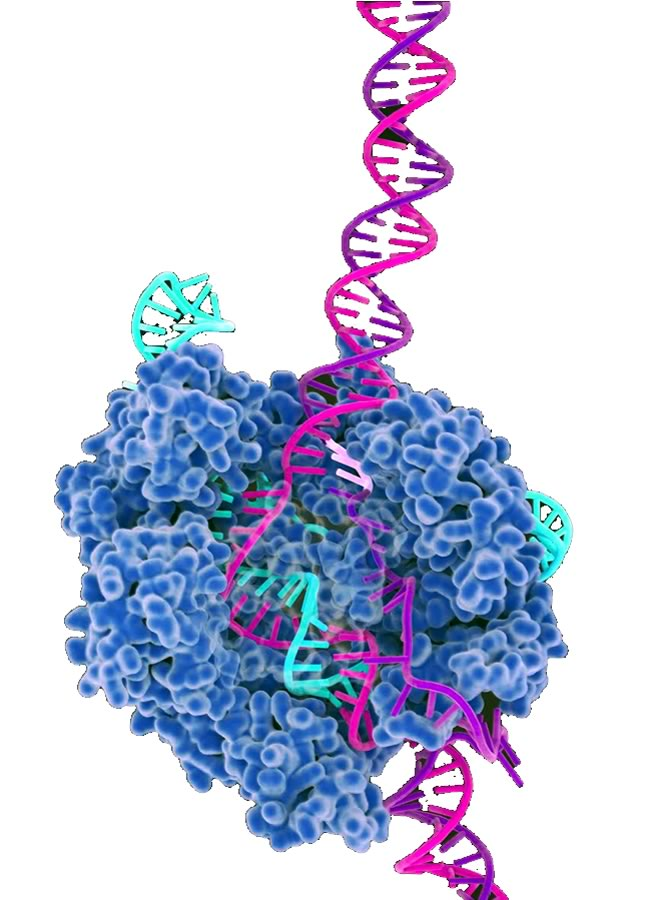

Papers on the human genome: – Decoding human acclerated regions K.S. Pollard 2016. The Scientist – Comprehensive identification and analysis of human accelerated regulatory DNA – Human-specific loss of regulatory DNA and the evolution of human-specific traits Important web sites: ExAC Browser (Beta) : Genomicus Synteny server XenBase | AmiGO | CRISPR-DIRECT
|
| |  |
Developmental Biology
← amusing and informative videos |